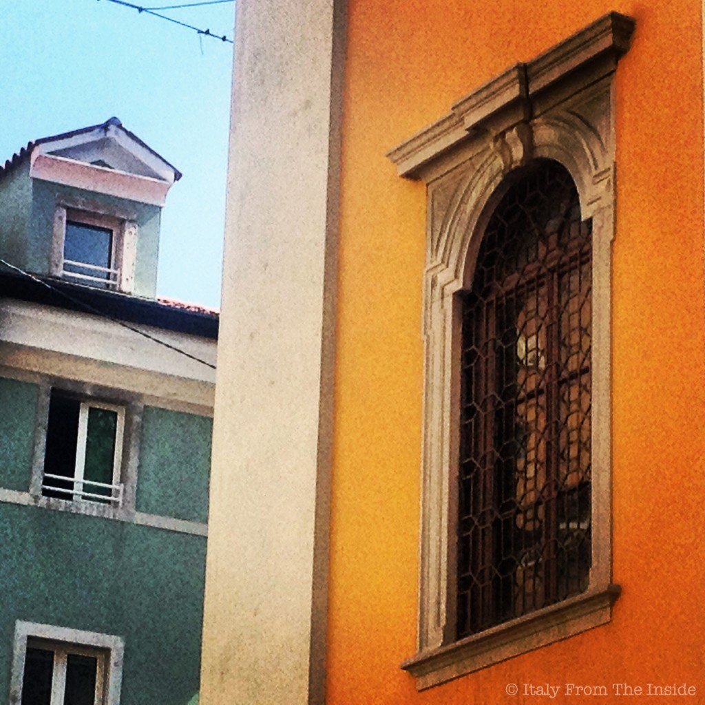
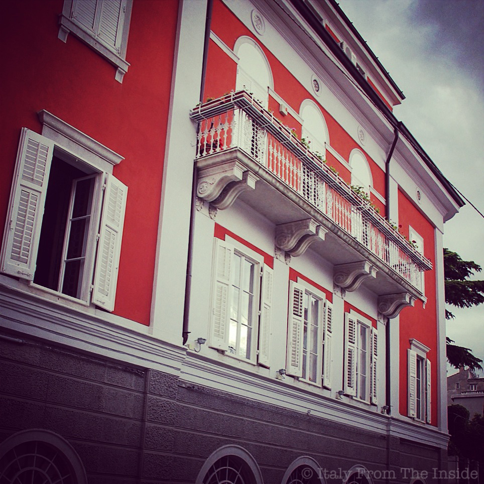
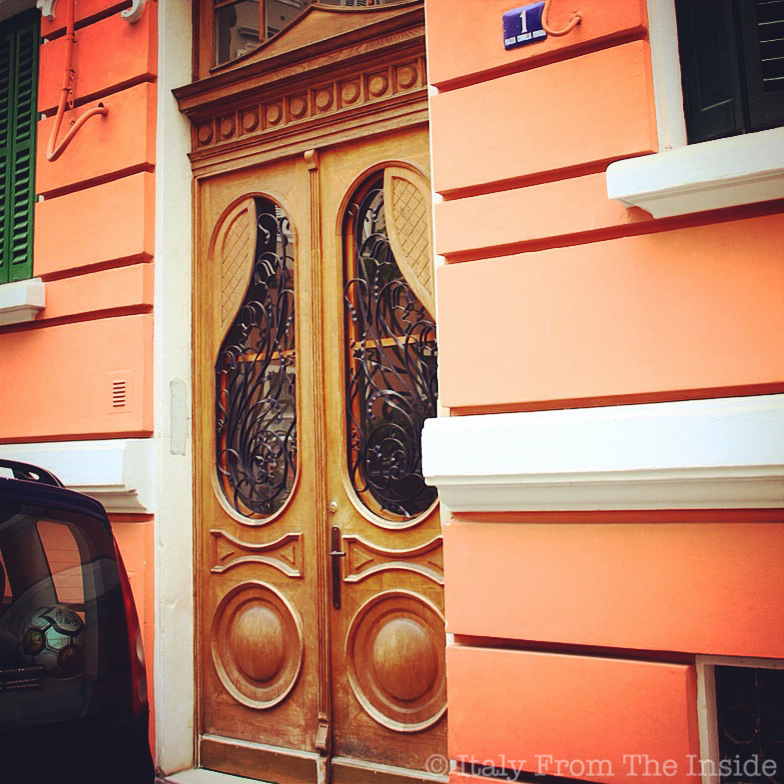

Yellow, blue, orange, green... These are the colors that have been used for the newly restored houses in the oldest neighborhoods of Trieste.
Besides the architectural aspect, which makes them already a pleasure to look at, these bold colors are a statement of artistic bravery.
Not to mention the entry doors... but that's another blog post.